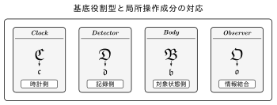

2 時間記述の達成条件と局所時間生成課題
第1章で提示した問題は、物理法則で用いられる時間変数の成立条件である。物理法則は、時間変数によって運動、変化、測定および境界条件を記述してきた。時間変数を前提として用いる記述は、時計、記録、同期、座標、時空構造および観測手続を扱う各領域にわたる。
本稿の時間構成は、従来の物理法則で原始前提として置かれてきた時間を、時刻値担体、保持対象、比較操作および法則接続先の関係として確定する。
本章は、時間変数をあらかじめ与えない時間生成に必要な四つの機能上の責任を第2.1節で定め、第2.2節および第2.3節で共通の監査形式を構成する。第2.4節から第2.6節は、時間変数の成立前に利用できる物理的材料から局所操作入力と役割インスタンス束族を順に構成する。第2.7節は、この構成順序と、第3章で物理担体実現指定の定義域側入力となる役割インスタンス束族を総合する。
2.1 時間記述達成条件の分解
本稿は、時間変数をあらかじめ与えない時間生成に四つの機能上の責任が必要であると提案する。この四責任を監査可能な確認欄として、時刻値担体、保持対象、比較操作、法則接続先の四項へ展開する。時刻値担体は、記述内で時刻値を担う対象である。保持対象は、時刻値と結びつく記録、表示、対象状態または境界条件である。比較操作は、複数の時刻値または時刻値に対応する記録の順序、差分または同時性を判定する操作である。法則接続先は、比較結果が入る運動方程式、場の方程式、測定式または境界条件である。
時計模型、座標時刻、固有時、時空計量、同期規約および発展パラメータは、この四項の一項または複数項に該当する。時間記述の比較では、表現名と四項を分離し、各項に該当する対象を確認する。
四項のいずれかが時間変数の既使用に依存して定まる構成では、時間変数の使用可能性が前提側に残る。本稿は、四項が時間変数の成立前に利用できる材料から定まることを、時間記述の達成条件として採用する。
この分解により、既存物理の時間記述、原始時間仮定および本稿の時間生成構成を同じ四項に沿って比較する。本稿の時間生成構成は、各項の対象、操作および法則接続先を明示する。
2.2 時間記述達成条件の判定形式
第2.1節の四項は、時間語、時刻記号、時計模型、座標時刻、固有時、時空計量、同期規約および発展パラメータを含む時間記述一般の達成条件を判定する確認欄を与える。
判定では、時刻値担体、保持対象、比較操作および法則接続先をこの順に指定し、各指定が時間変数の既使用に依存する箇所を特定する。判定結果は、表現名、時刻値担体、保持対象、比較操作、法則接続先、既使用依存箇所の六項で記録する。
四項が時間変数の成立前に利用できる材料で指定されることを、時間記述の達成条件とする。四項の指定が時間変数の既使用を根拠にする構成は、時間変数を原始前提として保持する。原始前提として保持された箇所は、第7章の法則時間使用監査によって判定する。
この判定形式は、既存物理の時間記述、原始時間仮定、時間変数の既使用依存および本稿の時間生成構成へ共通に適用する。
2.3 一般監査条件の参照形式
時刻、時間間隔、同時性または発展順序を用いる記述について、表現名と、時刻値担体、保持対象、比較操作、法則接続先および既使用依存箇所を記録する。時計模型、座標時刻、固有時、時空計量、同期規約および発展パラメータにも同じ参照形式を適用する。
本稿の局所時間生成構成は、四つの機能上の責任に該当する対象、操作および法則接続先をこの参照形式で示す。局所時間生成課題は、この参照形式を満たす構成を、時間変数の成立前に利用できる物理的材料から指定する課題である。
2.4 局所時間生成課題と局所場面
局所時間生成課題は、第2.3節の参照形式へ入る局所操作入力を、時間変数、時間間隔、周期、振動数または秒を前提せずに構成する課題である。
定義 2.1 (局所時間生成課題).
局所時間生成課題とは、原始時間を入力に置かず、局所的に区別可能な時計側入力、対象状態側入力、両入力の対応を保持して再提示可能な記録側入力、およびこれら三入力を共通の操作指定の下で受容して一つの局所操作入力へ結合する観測者側情報結合入力を構成する課題である。
2.4.1 時間量非入力の時計側ソースと局所場面
定義 2.2 (サイクル数ソース).
サイクル数ソースとは、時間変数に先立って、自然数値

で標識される内部カウンタ位置と、その更新
を供給する時計側ソースをいう。各内部カウンタ位置は時計側内部区別を与える。位相ラベルおよび表示状態は各内部カウンタ位置に対応し、表示更新およびカウンタ増分は内部更新に対応する時計側入力として与えられる。振動数値、周期、Hz、秒および時間間隔の割当ては、生成済み時間表現の上で定義される表現量である。
備考 2.3 (時計側反復性).
原始入力層の時計側反復性は、定義2.2の内部カウンタ更新と、それに対応する位相更新および表示更新の反復によって与えられる。等しい時間間隔、周期および振動数は、この時計側入力を生成済み時間表現へ接続した後に定義される表現量である。
定義 2.4 (局所場面).
局所場面 を、時間量を含まない構成入力が共通の操作指定の下で属する、有限または局所的に限定された型付き入力領域と定める。同一の への所属は、対象指定、記録識別子、構成境界および入出力接続の組合せによって判定する。時間的同時性、時間変数、時間間隔、周期、振動数および秒は、その所属判定に用いない。
2.5 基底役割型と局所四役割結合
定義2.1の四つの構成入力に、時計側、記録側、対象状態側および観測者側情報結合の役割型位置を与える。各役割型は、入力、作用および出力を指定する。
定義 2.5 (基底役割型集合).
LCTRにおける原始時間を入力に置かない時間生成構成の基底役割型集合を

と定める。各役割型の入力、作用および出力は次である。
-
•
は時計側役割型である。定義2.2のサイクル数ソースを入力とし、局所的に区別可能な時計側入力を供給する。
-
•
は記録側役割型である。時計側入力と対象状態側入力の対応を入力とし、その対応を保持して局所的に再提示可能な記録側入力を供給する。
-
•
は対象状態側役割型である。時間変数によってあらかじめ順序づけられていない対象状態を入力とし、局所的に区別可能な対象状態差異を対象状態側入力として供給する。
-
•
は観測者側情報結合役割型である。同一の局所場面に属する時計側入力、記録側入力および対象状態側入力を受容し、一つの局所操作入力へ結合する。


定義 2.6 (局所操作成分集合と局所操作成分).
局所場面 に対して、各基底役割型 の入力、作用および出力を 内で満たす構成成分からなる型付き部分集合族を


と定める。基底役割型の固定順

に対応する任意の役割索引付き局所操作成分族を
と表す。 を順に時計側局所操作成分、記録側局所操作成分、対象状態側局所操作成分、観測者側情報結合局所操作成分と呼ぶ。
定義 2.7 (局所四役割結合関係).
局所場面 に対して、
を、右辺の役割索引付き局所操作成分族のうち次の四条件をすべて満たすもの全体と定める。
-
1.
が供給する時計側入力と が供給する対象状態側入力の対応が へ入力される。
-
2.
がその対応を保持し、局所的に再提示可能な記録側入力を供給する。
-
3.
、、 が供給する各入力を が受容する。
-
4.
が受容した三入力を一つの局所操作入力へ結合する。


所属式
を満たす役割索引付き局所操作成分族を、局所四役割結合証拠と定める。
備考 2.8 (基底役割型記号の由来).
基底役割型集合 の各記号は、それぞれ Clock、Detector、Body、Observer の頭文字である。 が表す記録側役割型は、検出、記録および再提示を統合し、Detectorを代表語とする。

基底役割型、局所操作成分および物理担体は相異なる型に属する。基底役割型は入力、作用および出力の役割指定であり、局所操作成分は局所場面 内でその指定を満たす構成成分であり、物理担体は実装側の物理的対象である。

図中の数式
2.6 対象指定付き役割インスタンス束族と構成順序
定義 2.9 (対象指定添字と対象指定付き役割インスタンス).
対象指定添字 を、次の三項を一意に指定する添字と定める。

-
1.
一つの物理的追跡対象。
-
2.
一つの局所場面 。
-
3.
局所四役割結合証拠


第三項の

は、第一項の物理的追跡対象の対象状態から抽象化された対象状態側局所操作成分である。


各役割インスタンスは第二成分として対象指定添字を保持し、局所操作成分も同じ対象指定添字によって指定される。したがって、任意の対象指定添字 に対して

が成立する。
定義 2.10 (対象指定添字族上の役割インスタンス束族).

![\bigl{(}\mathsf{RI}[Z_{0}]\bigr{)}:=\left.\mathsf{RI}\right|_{Z_{0}}](math-S2/9657dccce774079866ba1730486dc3664827aead657b4efb0e4d51b472c50ee6.svg)


実現写像定義域側役割型集合を

によって定める。
由来成分族

の各成分は、 が指定する物理的追跡対象を抽象化元とする。実現写像定義域側成分族
は、物理担体実現指定の定義域側入力をなす。
命題 2.11 (役割インスタンス束族の先行決定).
対象指定添字族 、各 が指定する物理的追跡対象、局所場面 および局所四役割結合証拠から、役割インスタンス束族 が定まる。由来成分族と物理的追跡対象との抽象化元対応は、この指定に含まれる。由来成分族に対する物理担体実現指定は、 を定義域側入力として受ける追加構造である。

![\mathsf{RI}[Z_{0}]](math-S2/ee7ef67d6a003ae660de689eb8a958190c02ebcf3d82a3440f3e54e966cc3c22.svg)


2.7 時間量非入力構成の総合
定義2.1から定義2.4までにより、時間変数の成立前に利用できる時計側入力、記録側入力、対象状態側入力および観測者側情報結合入力が、同じ局所場面に属する局所操作入力として指定される。定義2.5から定義2.7までにより、四入力へ役割型、局所操作成分および局所四役割結合証拠が与えられる。
定義2.9および定義2.10により、各対象指定添字 から役割インスタンス束 が定まり、対象指定添字族 上で
![\mathsf{RI}[Z_{0}]=\bigl{(}\mathsf{RI}(\zeta)\bigr{)}_{\zeta\in Z_{0}}](math-S2/984913d842cc5fd1aa46d434d32ad44b3e8bba173d80ce7590b97863eed95fb3.svg)
が定まる。由来成分族は各物理的追跡対象との抽象化元対応を保持し、由来三成分族は物理担体実現指定の定義域側入力をなす。


命題 2.12 (対象指定付き役割構成の総合).
対象指定添字族 と、各 が指定する物理的追跡対象、局所場面 および局所四役割結合証拠から、対象指定位置と四成分位置を保持する役割インスタンス束族 が定まる。由来成分族と物理的追跡対象との抽象化元対応はこの指定に含まれ、由来三成分族は物理担体実現指定の定義域側入力をなす。この構成の入力データは原始時間を含まない。